Croquetas de cocido

Versión editada para cocinar. Lo que ella escribió, palabra por palabra, está en «Cuaderno».
Ingredientes
Preparación
- Picar bien picadito todo lo que sobre del cocido: la carne, el jamón, el chorizo y el tocino, bien escogido, que pese unos 250 g.
- Poner la sartén con 90 ml de aceite. Picar 110 g de cebolla bien picadita y rehogar.
- Agregar 187 g de harina y rehogar bien. Apartarla y que se enfríe.
- Cuando esté fría, agregar 1 litro y medio de leche y remover bien para que no se formen grumos.
- Poner al fuego y seguir removiendo hasta que haga «clocho», o sea, que empiece a hervir.
- Luego agregar el picadillo y seguir removiendo hasta que esté bien ligado.
- Ponerlo en una fuente y taparlo con papel transparente. Se deja enfriar y luego al frigo. Al día siguiente se hacen.
- Coger un poco de masa con una cuchara o un tenedor y enrollarlas con la mano.
- Pasarlas por pan rallado, un poquito.
- Cuando las tengáis todas hechas, las pasáis por huevo batido (2 o 3 huevos) y otra vez por pan rallado, y las colocáis en bandejas.
- Freír con abundante aceite.
Avisos y dudas
- En el cuaderno, «90», «110» y «187» no llevan unidad. Raul confirma: 90 ml de aceite, 110 g de cebolla y 187 g de harina.
- «hasta que haga clocho»: la palabra se lee así, y ella misma la explica («o sea que empiece a hervir»). ¿Es una expresión de casa?
- No dice para cuántas personas ni cuántas croquetas salen.
- Los pasos 9 a 11 están en la nota del margen; los he puesto en orden después del paso 8.
Tal como lo escribió
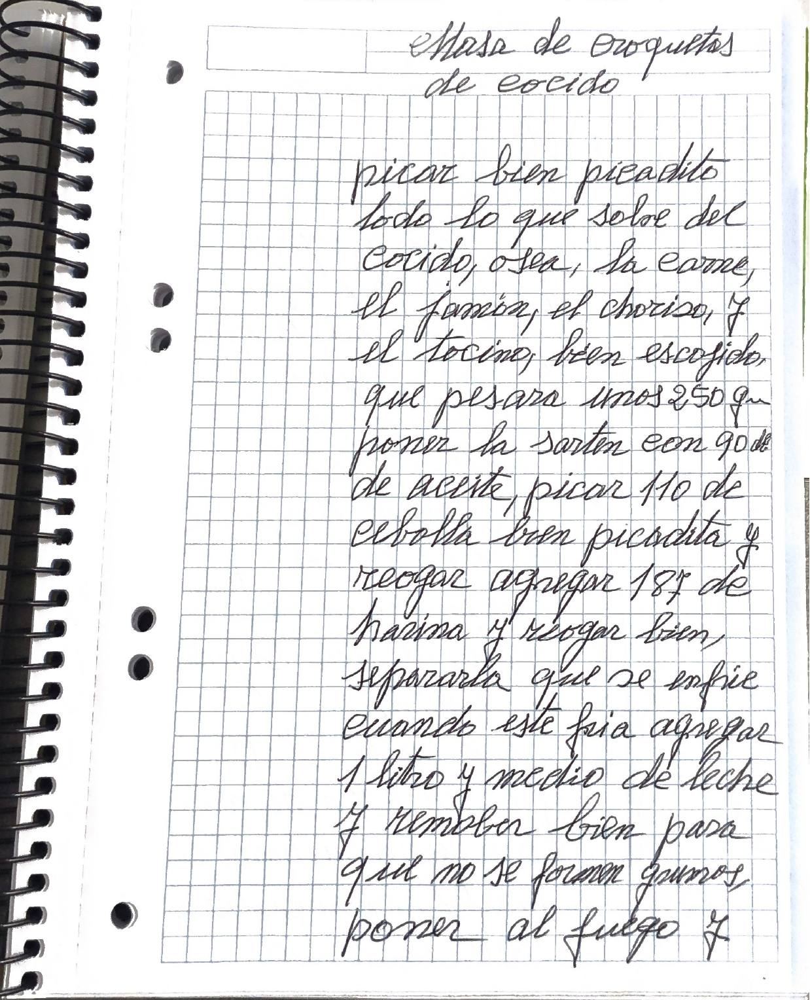
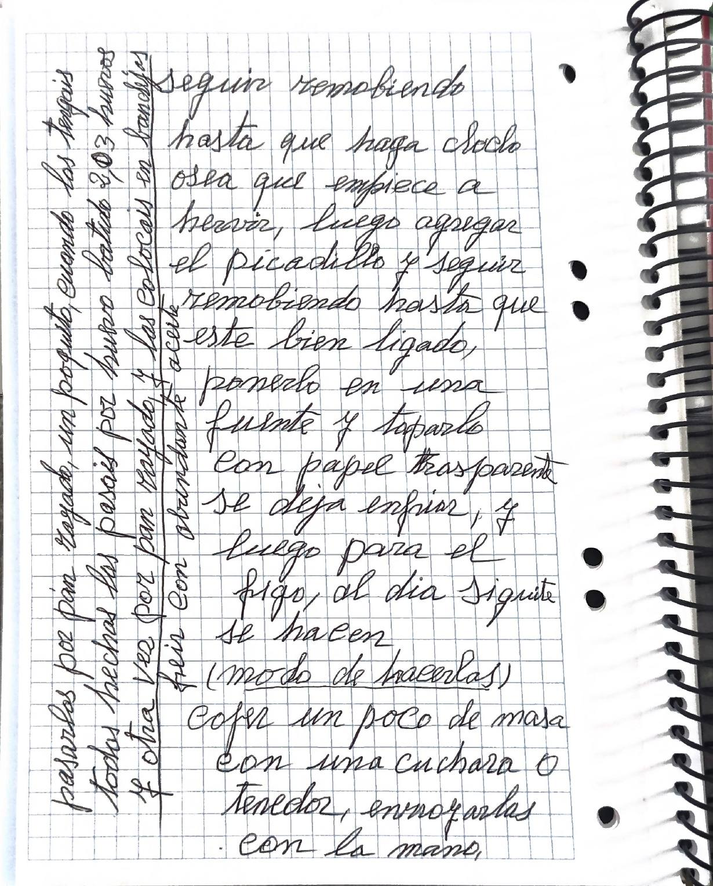
Transcripción fiel, con su ortografía. Lo que va entre corchetes son aclaraciones de la transcripción.
Masa de croquetas de cocido
picar bien picadito todo lo que sobre del cocido, osea, la carne, el jamón, el chorizo, y el tocino, bien escogido, que pesara unos 250 gr. poner la sarten con 90 de aceite, picar 110 de cebolla bien picadita y reogar agregar 187 de harina y reogar bien, separarla que se enfrie cuando este fria agregar 1 litro y medio de leche y remober bien para que no se formen grumos, poner al fuego y seguir remobiendo hasta que haga POR CONFIRMAR: «clocho» osea que empiece a hervir, luego agregar el picadillo y seguir remobiendo hasta que este bien ligado, ponerlo en una fuente y taparlo con papel trasparente se deja enfriar, y luego para el frigo, al dia siguiente se hacen
(modo de hacerlas)
coger un poco de masa con una cuchara o tenedor, enrrollarlas con la mano,
pasarlos por pan rayado, un poquito, cuando los tengais todos hechos los pasais por huevo batido 2, o 3 huevos y otra vez por pan rayado, y las colocais en bandejas / freir con abundante aceite
En la cocina
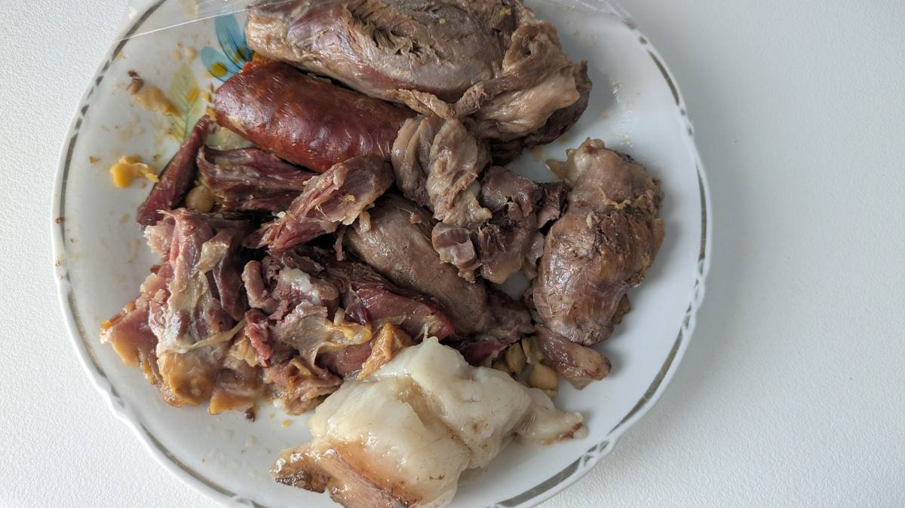
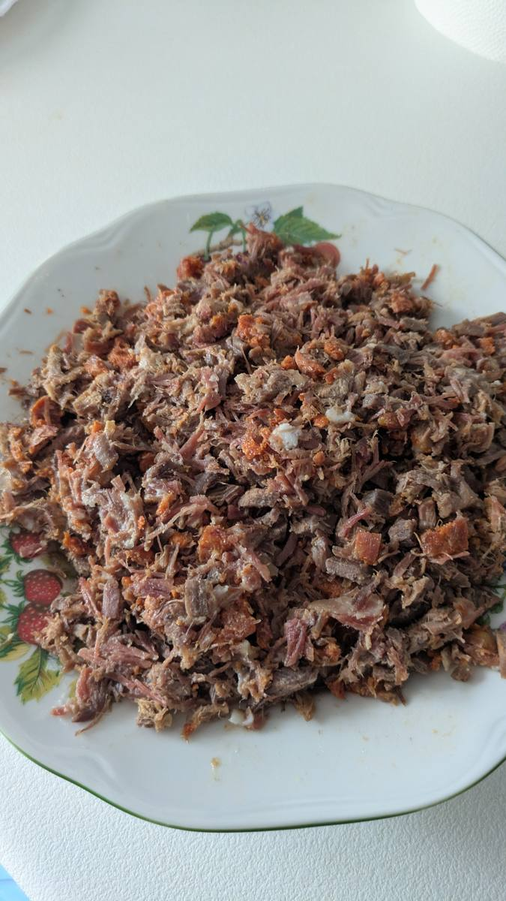
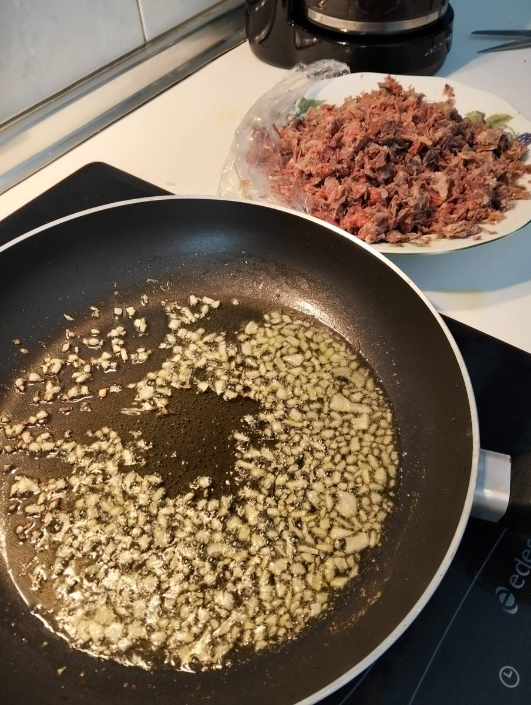
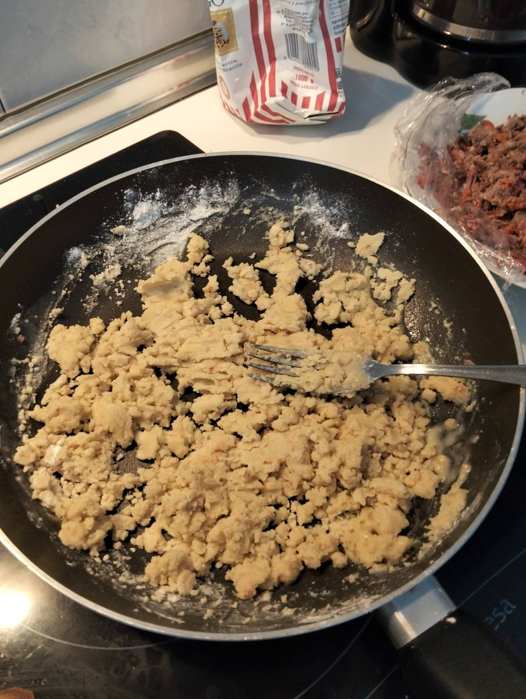
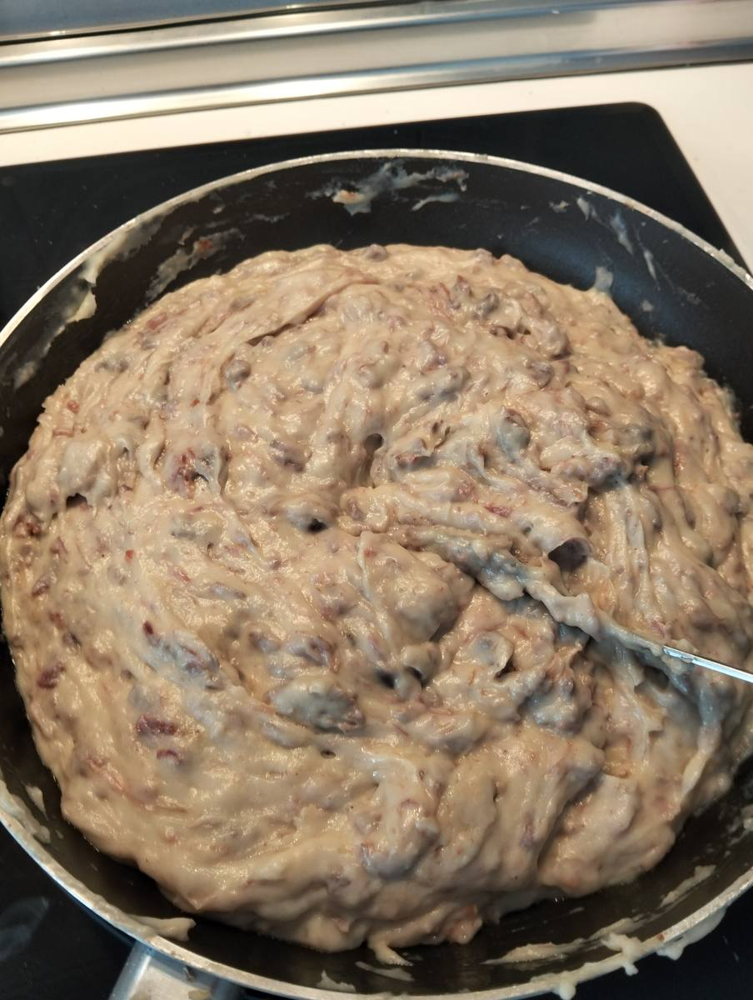
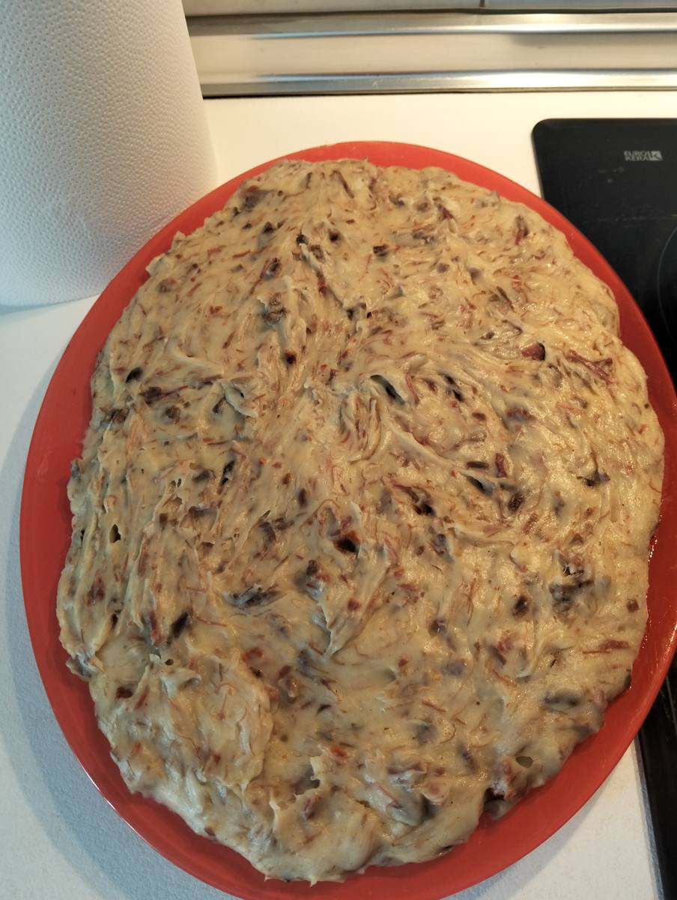
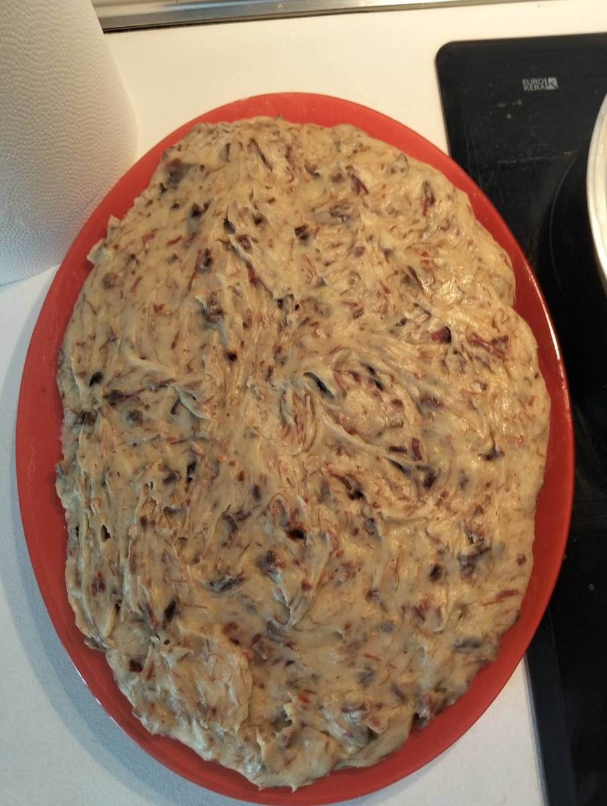
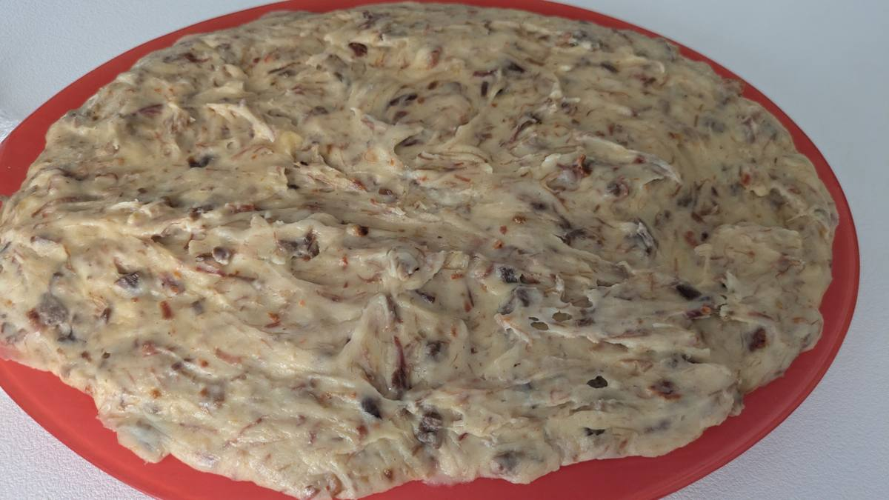
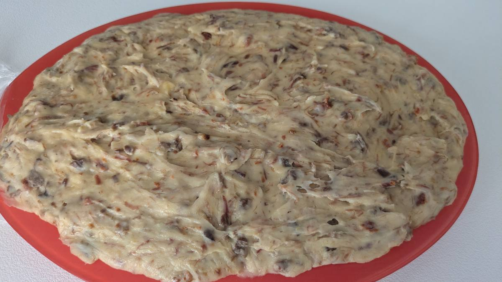